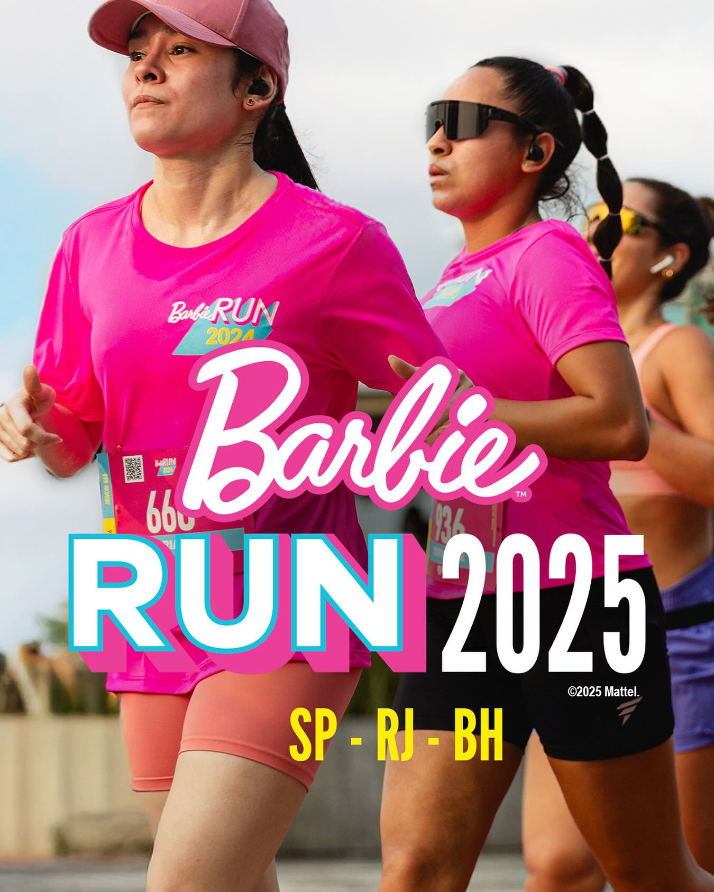
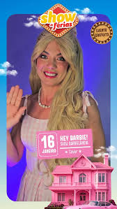
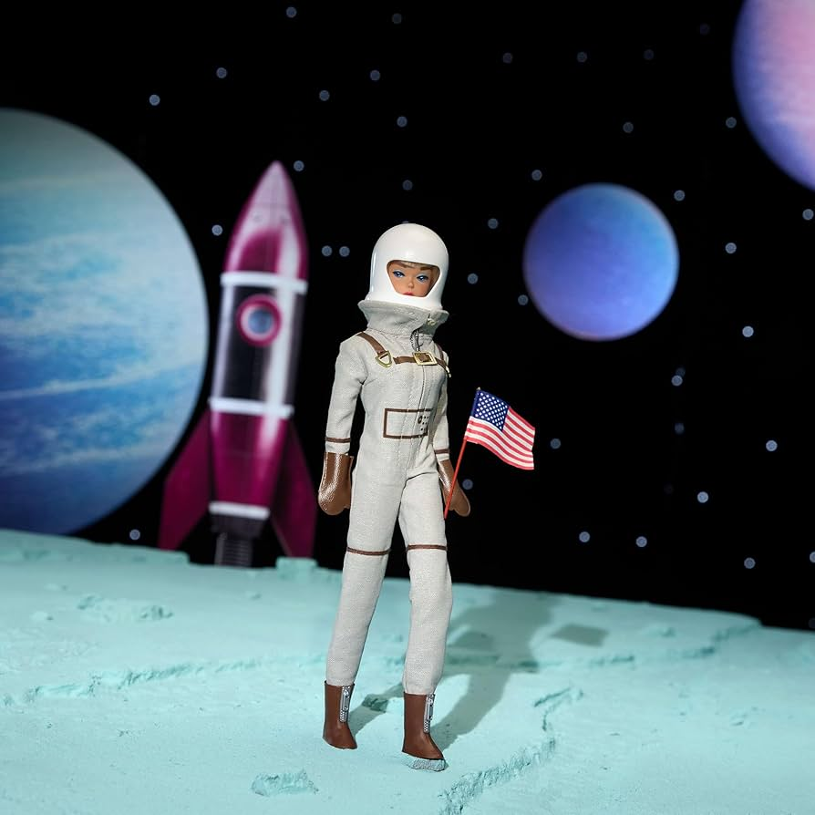
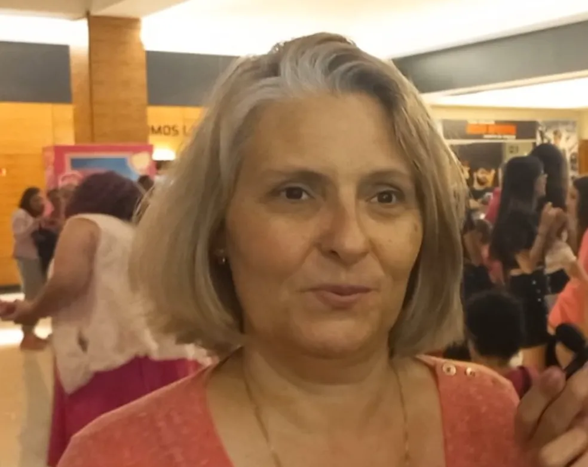
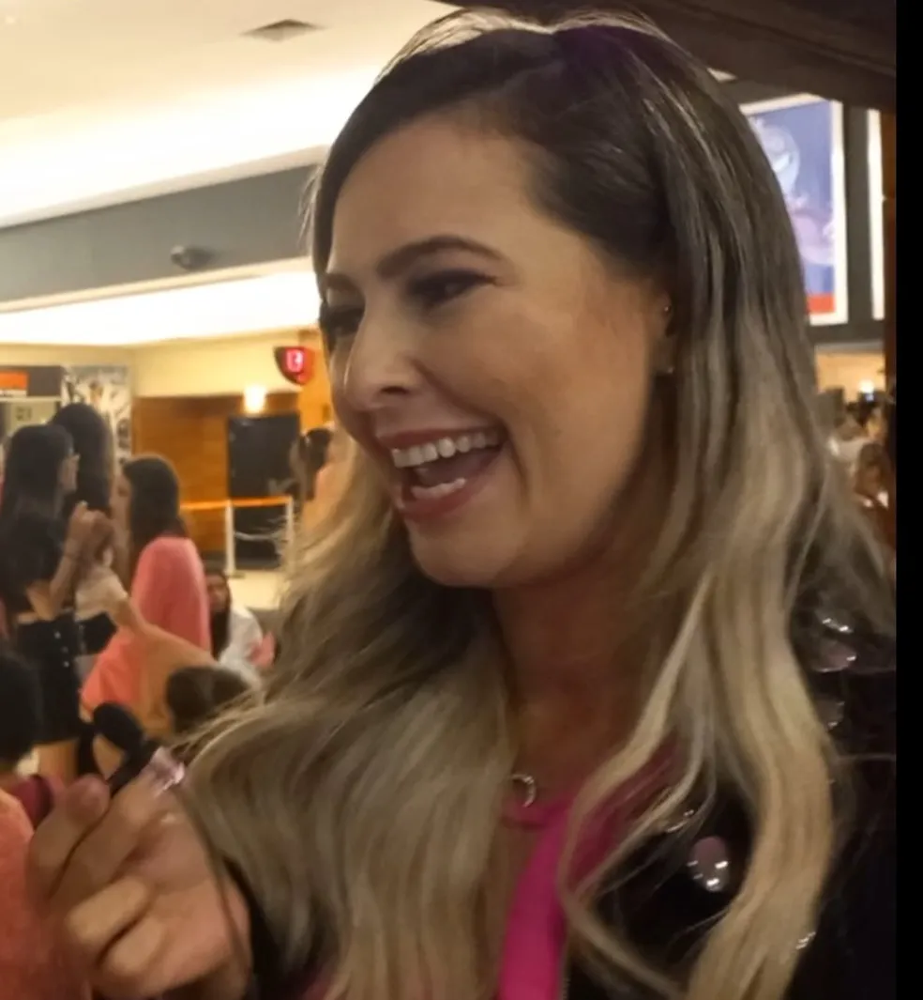
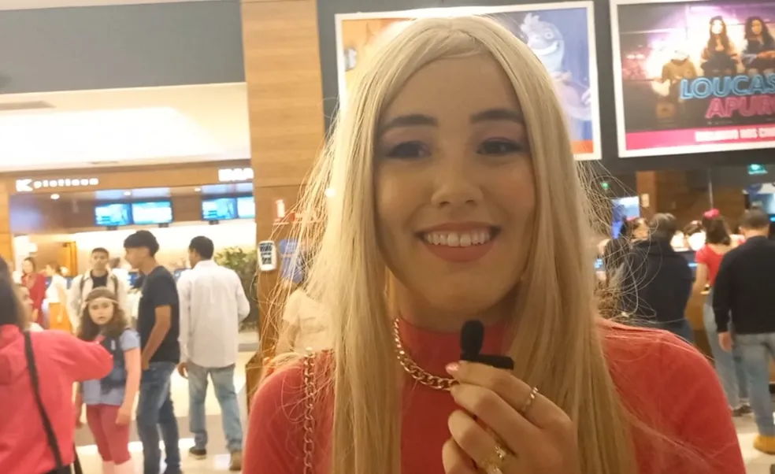

Seção de Eventos

Barbie Run 2025 (Corrida):
Etapas confirmadas no Rio de Janeiro (26/10 - Parque Olímpico), Belo Horizonte (02/11 - Pampulha) e São Paulo (09/11 - CepeUSP).

Barbie Dreamhouse Experience:
Evento imersivo com cenários instagramáveis e atividades interativas, com destaque para a Casa da Barbie no JK Iguatemi, em São Paulo.

Espetáculos e Festas:
Encontros temáticos, incluindo o "Show de Férias" com o espetáculo Hey Barbie! e festas inspiradas no universo rosa, conforme mostra o Instagram do Buffet Art & Gula.

Barbie Astronauta:
Destaque de 2026 como "Profissão do Ano" para inspirar carreiras.
Galeria de fãs

Alessandra Morais
"Você vê gente desde a minha idade, crianças, está todo mundo vivendo [...] Antigamente existia preconceito, hoje não, você vê um homem de rosa e está aqui dentro vendo. Isso é muito legal".

Paola Morais
“Eu amo a Barbie, eu cresci brincando com a Barbie e visto mulheres deixando elas lindas todos os dias como a Barbie. Então trouxe 25 pessoas hoje para ver o filme, temos duas fileiras só nossa”, brincou.
